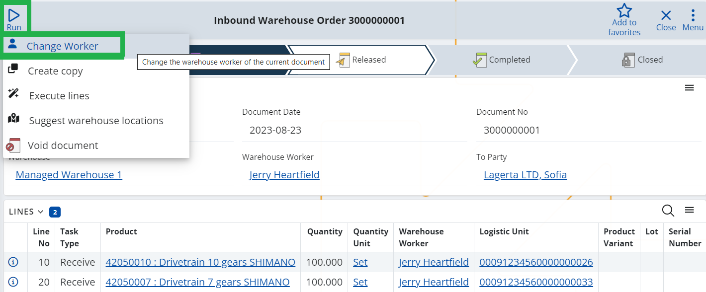

Change worker
The "Change worker" UI function allows changing the worker responsible for a task in a "Warehouse Order" document. It’s designed to be used in cases of force majeure, when there is a need to replace the initially chosen warehouse worker with another worker due to unexpected situations (like illness).
Upon changing the previous worker, the modified task will no longer be present in his tasks list within the WMS Worker interface. Instead, the task will become visible in the task list of the new worker.
Note
The function is available only for Warehouse Orders with "Released" status. The change is recorded through an adjustment document.
How to use it:
Open the relevant warehouse order in "Released" status that needs reassignment.
Click on the "RUN“ button and choose "Change worker." This action triggers a dropdown list of Warehouse Workers. The displayed workers are filtered based on the warehouse selected in the document.


Select the preferred Warehouse Worker from the dropdown list and confirm your choice by clicking "OK." This initiates the function.
After refreshing the document, the Warehouse Worker field will show the updated worker, in accordance with the changes made.